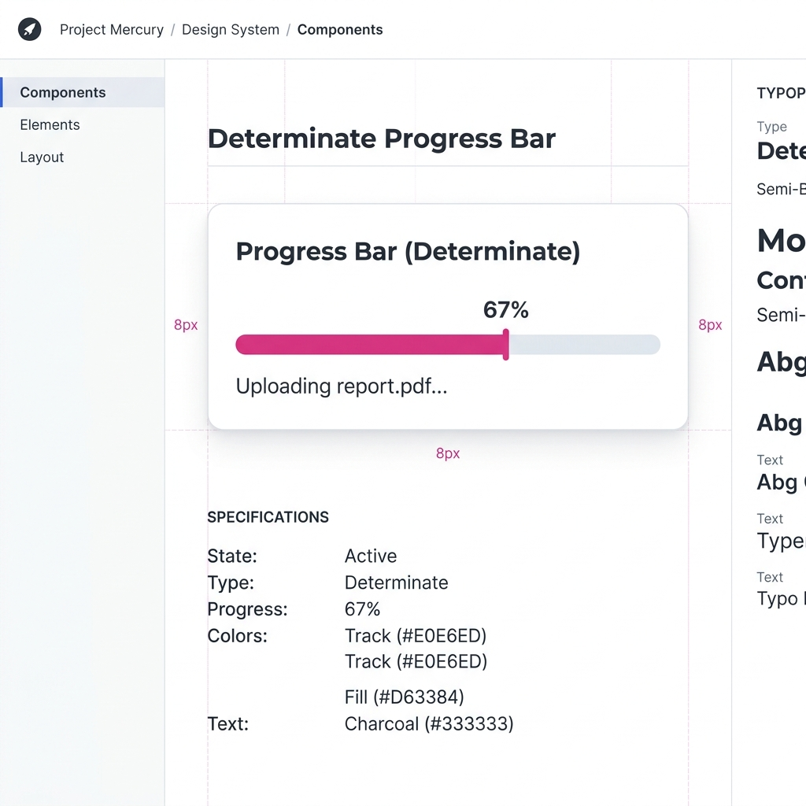
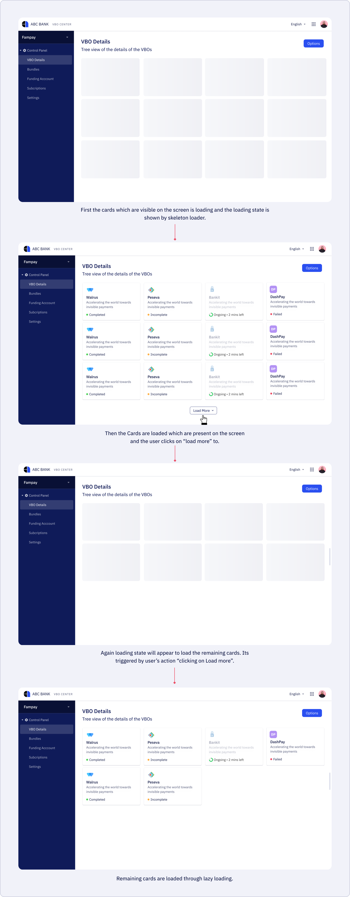
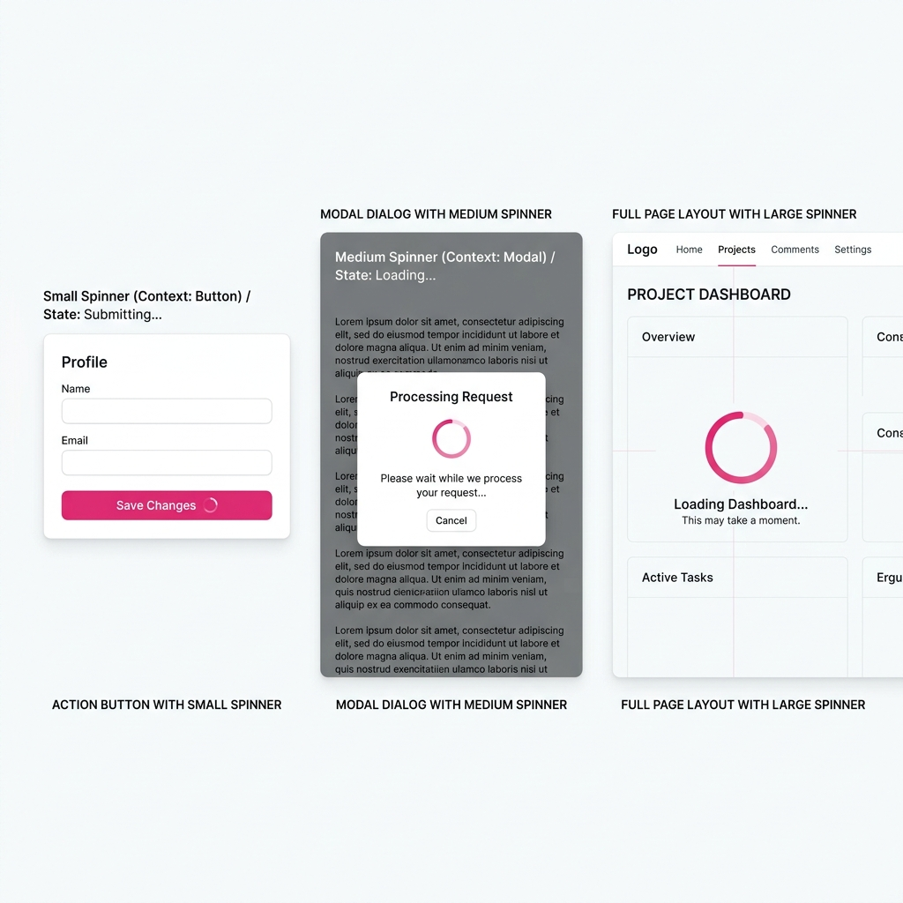
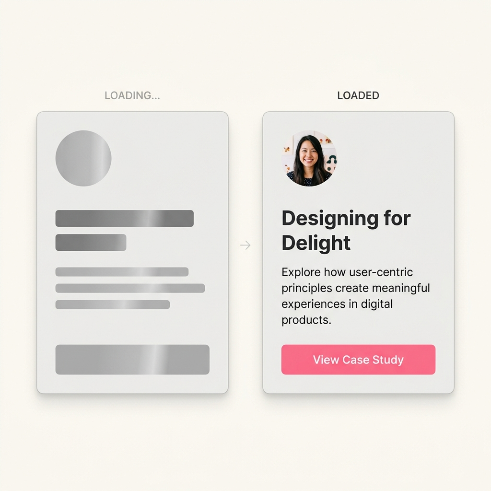

Loading is a visual indication that is used to set an expectation of what the system is doing.
It provides feedback to the user and could be used to inform them of the time or status of completion. The loading interaction is designed considering various factors like wait time, amount of data being processed, and task complexity.
The loading pattern describes different types of loaders along with recommendations on which type to use based on various scenarios.
How do loaders help?
A good loading pattern does a lot of quiet work. Here's what it actually achieves:
- Informs the user of system feedback: they know something is happening
- Establishes a sense of momentum and continuity: the product feels alive
- Gives the perception that content is loading faster than it actually is
- Handles the latency present when the interface loads data from a server
- Lets the user know the interface is not frozen: it's working
- Creates a sense of reassurance during uncertainty
Types of loaders
Before choosing a loader, the most important question is: do you know how long this will take? The answer determines whether you use a determinate or indeterminate loader.
1. Determinate
Determinate loaders display how long a task may take to complete. They show the status of time and are most appropriate when you can actually measure progress.
- Provides a clear sense of duration: start and end point
- When the process takes more than 10 seconds, adding a time estimate with the component is advised
- Should be used when load time is known or detectable
- Works best when communicating progress through numbers and percentages

image2: Determinate loader example showing percentage completion
2. Indeterminate
Indeterminate loaders display unquantified wait time, used when the system doesn't know how long the operation will take.
- Less informative by nature, which is a trade-off worth making for shorter waits
- Should be used when the wait time is less or unknown
- Best when the process is simply unquantifiable
Both determinate and indeterminate loaders can take the form of linear (bar) or circular (spinner). The shape and the type are separate decisions.
Loading behaviors
Beyond the visual form of a loader, there's a broader architectural question: how does your interface load its data? There are two dominant strategies, and choosing between them has real impact on both performance and user perception.
Lazy loading
Lazy loading is an optimising technique where content on the page is not loaded until it is needed. Normally, a whole page loads at once (known as "eager loading"). With lazy loading, the system fetches content only when the user requires it. It can be implemented with pagination, batch loading with "load more", infinite scroll, and when data is sourced from multiple origins.
Pros
- Improves performance by reducing initial page load time: delays non-critical content
- Reduces time consumption and memory usage, which optimises content delivery
- Reduces cost by cutting memory usage and total bytes delivered
Cons
- If overused, it can negatively impact SEO and overall site performance
- Cannot be used for critical above-the-fold content
- Too much dynamic loading can cause interruptions in the user experience

image3: Lazy loading vs eager loading: how content is fetched over time
Progressive loading
Progressive loading loads content in steps: the page appears in multiple stages. Elements appear once they have loaded. Typically, the skeleton outline renders first, followed by text, then images.
Pros
- Indicates a clear sense of progress: the user can see the page coming alive
- Encourages active waiting by giving users new information at each step
- Works well on pages that call data from multiple sources
- Particularly effective when filtering and sorting in tables: loads data stepwise
Cons
- Should not be used on low-data pages that can load in one go
- Takes more development effort than a single-pass page load
- Too much dynamic loading can cause interruptions for the user
GDS components: Spinner, Progress & Skeleton
Once you've decided on your loading approach, you need to pick the right visual component. There are three main ones, and they're not interchangeable.
Spinner
Use a Spinner when the wait time is short: typically when the process takes more than 1 second but the duration is unknown. The Spinner is the most common loading pattern used across platforms. It's usually used for loading the status of a page, section, or inline action when the system cannot determine the exact wait time.
When to use
- When the page structure is undetermined
- In the case of empty white screens: use a spinner to communicate the system is working
- When an activity is happening in the background (uploading or saving)
- When a component is making an asynchronous update without refreshing the page
- To reload a failure error or empty state
- When you manually refresh the page
When not to use a spinner
- When more than one component is loading simultaneously: use skeleton instead
- Avoid using multiple spinners at the same time on the same view
- Avoid for processes that take longer than expected: switch to a determinate loader
Use cases by size
- Small Spinner: Use with a button, near inline text, or for small feedback moments
- Medium Spinner: Modals, side sheets, within a component, forms, areas with limited space
- Large Spinner: Whole page, larger components, areas with no space constraints
An overlay spinner can be used to block user interaction with the whole screen or a section while a process runs in the background: use sparingly.

image4: Small, medium, and large spinner use case comparison
Progress
Progress loaders are informative loaders that show how much time the system will take to complete a task. They tell the user how much is done and how much is left: reducing the uncertainty of long-running processes.
When to use
- When a task is taking more than 10 seconds: and duration can be measured
- While uploading or downloading data
- Where the process is measurable and you can communicate a percentage
- To give informative feedback during a long, background process
When not to use
- Avoid for an unknown amount of time: don't fake a percentage
- Should not be used for fast processes: it creates unnecessary visual noise
Use cases
- Exporting and importing files
- Processing a document
- Loading a long-running background task
- To show where the user is in their journey (multi-step flows)
- Opening a new application or large file
In some use cases, a progress loader can include a cancel button: giving the user control to abandon a process they no longer want to wait for.
Skeleton
Skeleton loaders show a preview of the user interface before the actual content appears. They give users an initial sense of the page's structure and set expectations about what's coming: creating the illusion that content is loading faster than it actually is.
When to use
- When you want a more visually appealing and polished loading experience
- To decrease the perceived wait time on content-heavy pages
- When giving a sense of structure to the page before content shows
- When a loading spinner would not be prominent enough on screen
When not to use
- Should not be used for small feedback or inline actions
- When wait time is short: skeleton adds unnecessary complexity
- Avoid with dynamic layouts where the page structure is unknown in advance
- Do not combine skeleton loader with a spinner on the same element
Use cases
- Home pages and dashboards of applications
- When loading structured data like tables and charts
- When there is high traffic on an interface
- Cards, whole pages, lists, content blocks, charts, and tables
- Navigating between applications or sections

image5: Skeleton loader: matching shape and layout to real content
The skeleton loader should match as closely as possible with the actual content: use different shapes to hint at the real layout. The wait time ideally should be less than 1 second, which is considered an immediate response.
Loading components should only be used when the wait time is unavoidable and the delay is not caused by another underlying issue in the interface.
Loading across scenarios
Different UI contexts call for different loading representations. Here's how the pattern plays out across the most common surfaces.
Tables
Tables consist of data in the form of rows and columns. When data is loaded from an API call: whether on page refresh, table refresh, or initial load: skeleton loaders are best suited. They mirror the structure of the content, indicating exactly what is about to appear in each row and column.
image6: Skeleton loader applied to a data table
Cards
Cards can contain several elements: content, buttons, inline actions, media. Loading can happen at multiple levels: for the entire card, the content within a card, or the whole section in which cards live. Each level calls for a slightly different approach, but skeleton loaders remain the most intuitive choice for card layouts.
image7: Card loading states: full card, content area, and section variations
Side Sheets
Side sheets are panels that slide in from the edge of the screen. For side sheets with significant data to load, skeleton loaders are recommended. For shorter waits: for example when the sheet opens but data hasn't arrived yet: a spinner centred within the sheet is the right call.
image8: Side sheet loading: skeleton for heavy data, spinner for short waits
Buttons
Buttons are a primary point of interaction, and they need to communicate when they've been heard. When a button triggers an asynchronous action, use an indeterminate spinner placed inside or immediately adjacent to the button. This confirms the system has received the tap and is working on it.
image9: Spinner inside a button indicating an in-progress action
Opening applications
When a user opens a new application or navigates between major surfaces, the wait can feel jarring without the right treatment. Combine an indeterminate progress bar with the application's logo and a shimmer effect. This gives the user context about what is loading, and makes the wait feel intentional rather than broken.
Text edits
Inline text verification (think username availability checks or form field validation that calls an API) should use a small spinner. It appears near the field to signal that the system is checking, without disrupting the rest of the form or drawing too much attention.
Tabs
When switching between tabs triggers a data fetch, a loading state is needed specifically for that tab's content area. A skeleton or spinner scoped to the tab panel (not the whole page) keeps the loading experience contextual and prevents unnecessary visual disruption to the rest of the interface.
Uploading & downloading
File operations are among the clearest candidates for a determinate progress loader. The user has explicitly triggered an action that will take time, and they expect to see how far along it is. A progress bar with a percentage or file size indicator manages the uncertainty of large transfers and gives users confidence the operation is proceeding correctly.
image10: Progress bar for file upload/download with percentage indicator
Comparison: which loader does what?
This table maps each loader type against five key qualities that matter when choosing the right pattern for your context.
| Loader / Pattern | Relevant Feedback | Reduces Uncertainty | Reduces Perception Time | Space Efficient | Low Wait Time |
|---|---|---|---|---|---|
| Indeterminate Spinner | Low | Medium | Medium | High | High |
| Determinate Spinner | High | High | High | High | Medium |
| Indeterminate Progress | Medium | High | High | High | High |
| Determinate Progress | High | High | High | High | Low |
| Skeleton Loader | High | Medium | Medium | Medium | Medium |
Best practices
Good loading design is partly about the component you choose and partly about the details that surround it. Here are the principles worth internalising:
- Use subtle animations to make the wait more enjoyable: motion signals life
- Prioritise loading critical content first, based on what the user actually needs to see
- Prefetch data where possible to reduce the need for a loading state at all
- Start loading animations slow and end fast: this creates a perception of speed
- Include supporting text alongside loaders (e.g. "Uploading your file…") for clarity and reassurance
- Always provide clear completion feedback so users know the action has finished
- Avoid showing a loading state for near-instant responses: it creates more anxiety than it resolves
- For extremely long waits, consider offering an engaging distraction: progress messages, tips, or even playful micro-interactions
The best loading state is one the user never notices. Because it felt so natural, they assumed the content was always there.
Anti-patterns
Knowing what not to do is just as important as knowing what to use. These are the two most common loading mistakes in production interfaces.
Skeleton containers
Treating the loading state as a replacement for the entire modal or side-sheet container (including headers, footers, and structural chrome) is a mistake. The container boundaries should remain static and visible; only the internal content area should use a skeleton. Skeletonising the full container causes the interface to feel completely formless and gives the user no anchoring reference.
image11 — Anti-pattern: full container skeleton (left) vs. correct inner-content skeleton (right)
Visual instability
Avoid drastic layout shifts when transitioning from a loading state to real content. If the skeleton's shape doesn't match the actual content's dimensions, the page will jump and reflow as data arrives, causing the user to lose their place and eroding trust in the interface. The skeleton should be a faithful silhouette of what's coming, not a rough approximation.
The right loading pattern bridges the gap between system time and user perception. Done well, it's invisible. The user simply feels like things move quickly. Done poorly, it's the detail that quietly erodes trust in an otherwise great product.